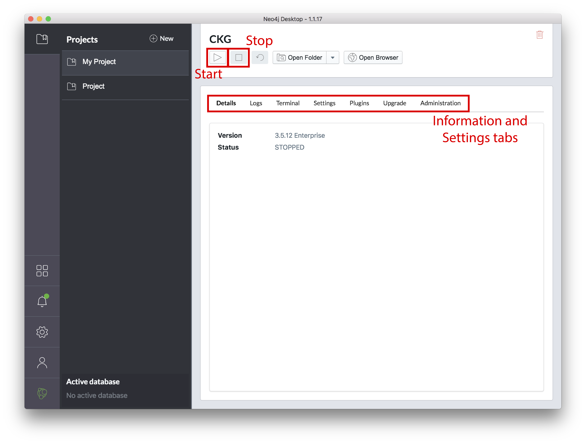

Getting Started with Neo4j¶
Getting started with Neo4j is easy.
First download a copy of the Neo4j desktop version from the Neo4j download page. The Community Edition of the software is free but a sign up is required. Once the file has downloaded, you can install Neo4j by following the instructions automatically opened in the browser.


Open the Neo4j Desktop App and create a database by clicking Add graph, followed by Create a Local Graph, using the password “bioinfo1112”. Now that your database is created:
{kind=link}


Click Manage and then Plugins. Install “APOC” and “GRAPH ALGORITHMS”.
Click the tab Settings, and comment the option
dbms.directories.import=importby adding#at the beginning of the line.Click Apply at the bottom of the window.
Start the Graph by clicking the play sign, at the top of the window.
If the database starts and no errors are reported in the tab Logs, you are redy go to!
Add Neo4j graph database to .bashrc¶
In order run the graph database, add the path to the database to your .bashrc (or .bash_profile) file.
To find out which of the files your machine uses, go to the terminal and type more ~/.bash and double press the tab key on your keyboard for auto-complete.
Immediately below, multiple filenames will be printed, check if among those, is .bashrc or .bash_profile.
Note
The bash file can be name .bashrc or .bash_profile. if your system does not have either, created one of them (e.g. vi ~/.bash_profile).
Open the
.bash_profile(or.bashrc) with your favourite text editor. In this case, we use the vi editor:
$ vi ~/.bash_profile
Note
To edit with vi press i on your keyboard.
Add the path to the previously created Neo4j database to the file:
NEO4J_HOME="/Users/username/Library/Application Support/Neo4j Desktop/Application/neo4jDatabases/database-identifier/installation-3.X.X/"
export NEO4J_HOME
Note
To save and close a file with vi editor, press Esc followed by :wq.
Warning
Depending on your system, the path may vary. To check the path to the database go to Logs in the Neo4j Desktop interface.
Reload the
.bashrc(or.bash_profile) file:
$ source ~/.bashrc
or
$ source ~/.bash_profile